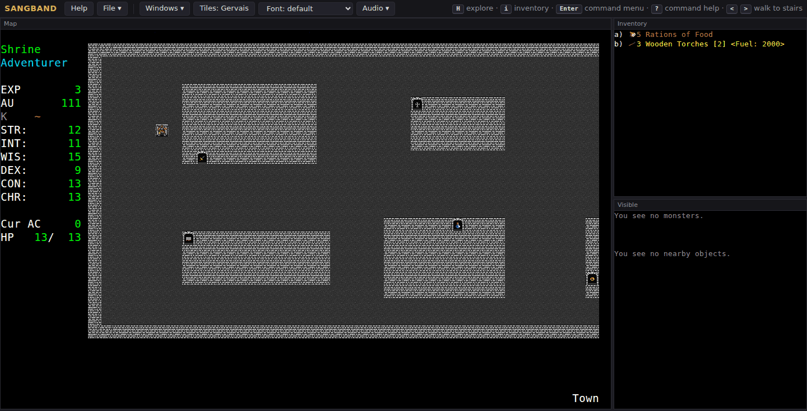
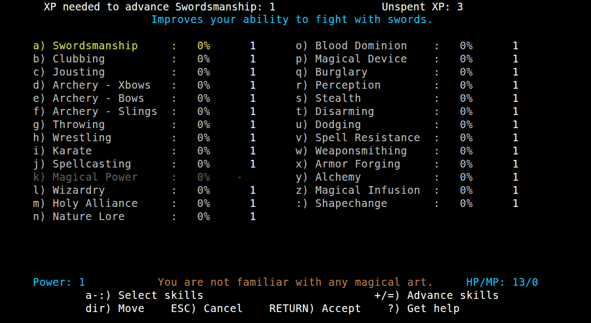
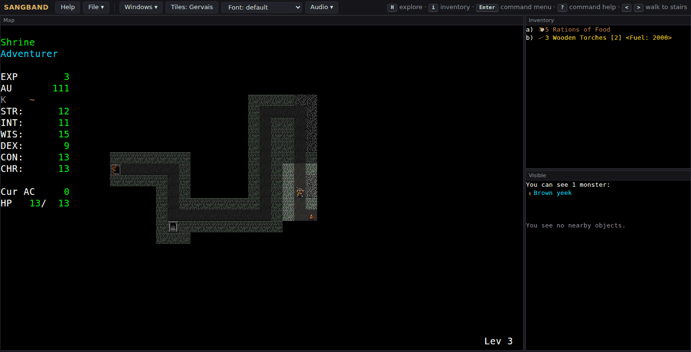

Sangband
Skills Angband · no classes, no levels: you are the skills you buy
> Enter the dungeonLineage
Moria → Umoria → Angband 2.5 → Chris Petit’s Bangband → Sangband. Petit wanted an Angband with a skills system instead of character classes and built it on the Angband 2.5.x code as modified in Bangband, another of his variants. Development stopped for about a year at 0.8.5 when he graduated; Michael Gorse re-released 0.8.5 and took it to 0.9.3 (1995–1997). Julian Lighton, helped by Greg Wooledge, made 0.9.4 (1997) and 0.9.5 (1998) and updated the code to Angband 2.8.3. In 2001 he handed it to Leon Marrick (Oangband), who had played it since its early days; after years of betas Marrick released 1.0.0 on 26 May 2007. A Google Code team (Joshua Middendorf, Christer Nyfält, Scott Yost and others) made 1.0.1 and 1.0.2 (2010–2011). This build is the svn trunk at r313, a few months after 1.0.2.
The sources disagree on two points:
- First release: the manual’s history says 3 March 1994 (and 0.8.5 on 29 April 1994); the copyright list in the same file says “Sangband 0.1 – 0.8.5: Jun 28, 1994”; RogueBasin (seen here only as a search-engine summary, the site is blocked from this build machine) gives 2 September 1994. All agree on 1994.
- What it is built on: the manual names Angband 2.5.x via Bangband and later Angband 2.8.3;
src/changes.txt(April 2007) says 1.0.0’s base is “Angband 2.9.3, with many of the changes made through Angband 3.0.6” plus “most of the basic Oangband 0.7.0 code”; the source readme calls it “based on Angband and also on Oangband”. The family tree puts it under Angband and names the Oangband code in the entry.
Sangband’s AI and ideas went on elsewhere: NPPAngband took in Marrick’s Sangband/Demoband “4GAI” monster AI. See the family tree. Sources: docs/manual.txt and lib/help/angdesc.txt (history and copyrights), s-readme.txt, src/changes.txt, docs/readme.txt, the Google Code downloads (1.0.2 on 31 March 2011).
Credits
| Petit | Chris Petit, author, 0.1–0.8.5 (1994) |
| Gorse | Michael Gorse, 0.8.5–0.9.3 (1995–1997) |
| Lighton | Julian Lighton, 0.9.4–0.9.5 (1997–1998), with fixes by Greg Wooledge and Jens Gislev |
| Marrick | Leon Marrick (-LM-), maintainer from 2001, 1.0.0 (2007), author of the manual |
| DevTeam | 1.0.x developers Joshua Middendorf, Christer Nyfält, Scott Yost (beta 15 was Yost’s); the 1.0.2 title screen (news.txt) lists Petit, Gorse, Lighton, Marrick and Middendorf; the 1.0.1 splash only the first four |
| Contributors | Werner Baer, Charlie Ball, Eric Bock, Andrew Doull, Steven Fuerst, Diego González, Jeff Greene, Bahman Rabii, Robert Rühlmann, Eytan Zweig and many more (docs/readme.txt) |
| Art | David Gervais (32×32 tiles, used in this port), Adam Bolt (16×16 tiles) |
| Music | Reenen Laurie and Cosmic Gerbil (from ToME), Dirk Laurie, Jaakko Peltonen (Falcon’s Eye), tunes from Angband |
| Angband | Alex Cutler, Andy Astrand, Sean Marsh, Geoff Hill, Charles Teague, Charles Swiger, Ben Harrison, Robert Rühlmann |
| Moria | Robert Alan Koeneke, Jimmey Wayne Todd Jr. (1985); Umoria: James E. Wilson (1989) |
From lib/file/news.txt (title screen), lib/help/angdesc.txt, docs/readme.txt, the change logs and lib/xtra/music/jukebox.cfg.
Screenshots

news.png, the Google Code project’s splash), ASCII art like the game’s own news.txt.


Trivia
- Its own project page calls it “the oldest variant of Angband still active” and among “the first roguelikes anywhere to introduce skills, shapechanges, fully-fledged natural and necromantic realms, and special character talents”. (Google Code project, data)
- 0.9.5 (1998) removed “the concept of ‘level’” from the game completely: there are no character levels, only the power your skills add up to. (changelog)
- After 1.0.2 shipped, two room builders by Eric Bock (the maze and the pillared room) turned out not to be GPL. They were replaced in June 2011 (r299); the maze code now says “Rewritten by Joshua Middendorf for full GPL compatibility”. This build (r313) has the rewrite. (issue 181,
src/generate.c) - Priests used to lose skill with “pointy” weapons. The team purged the “pointy priestly penalty” in November 2010 (r202): it made sense in Vanilla (and D&D), where priests fight better than mages, but not in Sangband. (issue 97)
- A team member proposed making the game harder again; one player asked for a difficulty mode instead, having not yet “made it past the 3rd dungeon level”. Sauron got tougher in r225 all the same. (issue 103, changelog 1.0.2: “Sauron tougher.”)
- 1.0.2 added three races: the Beorning, the Drúedain (Woses) and the Ent, who can also be a shapechange form. (changelog)
- The manual’s title is ASCII art because “ASCII art is cooler”, says a comment in its HTML, next to one about hiding the e-mail address: “I loathe spam.” (manual.html source)
What's unique
- No classes, no levels: experience is a currency. You spend it on 27 skills at $; costs rise with level, related skills make each other cheaper, and unpractised skills cost extra.
- Oaths: commit for good to the Oath of Iron, the Oath of Sorcery, the Covenant of Faith, Yavanna’s Fellowship, the Black Mystery or the Burglars’ Guild, and give up the other paths.
- Four realms (wizard, priest, druid, necromancer), seven books each; necromancers want the dark, druids change the weather.
- Shapechanges: 18 forms from goat, mouse and bear to dragon, Ent, angel, vampire and lich, through spells, talents and the Shapechange skill.
- Making things: forge weapons and armour, brew potions and scrolls, and infuse items with magical essences gathered in the dungeon; burglars steal, pick locks and build traps loaded with your own launcher and ammo.
Code dive
- Language: C, 225,224 lines in 83
.c/.hfiles insrc/(74 in the main folder, the rest inmac/,win/,unix/); biggest filesgenerate.c(8,419),cmd4.c,spells1.c,cmd6.c,files.c. Files for its own systems:skills.c,talents.c,obj_make.c(forging),traps.c,quest.c,history.c,monattk.c. - Guided tour:
src/s_guide.txtis Marrick’s map of every source file (“Most everything that’s in UPPERCASE is defined here.”). - Data:
lib/edit/*.txt(monsters, objects, artifacts, ego items, vaults, terrain, quests, stores, limits) parsed at start; high scores live inlib/apex/; the savefile is named after the character, with a list of characters inuser.0.svg. - Frontends: Windows (optionally with SDL sound and music), SDL, curses, DOS (
main-ibm.c), X11 and GTK, old Mac Carbon. There is a “mindless borg” (borgdumb.c) for profiling, off by default. - History: Google Code svn (
skills-angband), 191 issues on its tracker (2010–2011). Change logs from 0.8.0 to 1.0.2 indocs/. - This port: WebAssembly build with a canvas z-term frontend, the Gervais tiles, sub-windows, the game’s own sounds and music, auto-explore (H), an Enter command menu and item menus with a cursor. Source: memmaker/sangband (our changes).
Stats
| Thing | Count | Notable ones |
|---|---|---|
| Races | 14 | Ent, Beorning, Drúedain, Giant, Dark-Elf beside the Angband ones |
| Classes | 0 | you are what your skills say |
| Skills | 27 | Jousting, Karate and Wrestling, Blood Dominion, Burglary, Magical Infusion, Shapechange |
| Oaths | 6 | Black Mystery (necromancy), Burglars’ Guild |
| Realms | 4 | 28 books; Necronomicon, Raal’s Tome of Destruction |
| Spells | 207 | Wizard 50, Priest 54, Druid 51, Necromancer 52: Feed off Light, Thaumacurse, Winter’s Grip, Call on Varda |
| Talents | 50 | Circle Kick, Predict weather, Detect & nab objects, Poison ammo, Dragon-breathing |
| Shapes | 18 | goat, mouse, cheetah, vortex, golem, werewolf, lich |
| Monsters | 607 | 88 uniques (Gyrus, Necromancer-King; the Tarrasque; Tevildo, Prince of Cats) and 11 player-ghost templates |
| Object kinds | 535 | essences, the essence pouch, Sprig of Athelas, empty bottles for alchemy |
| Artifacts | 136 | plus random artifacts |
| Ego types | 132 | |
| Terrain | 53 | up and down shafts, lava, water, trees |
| Vaults | 118 | |
| Levels | 127 | Sauron on 99, Morgoth on 100; the only 2 fixed quests |
| Stores | 7 + home + Inn | the Inn hands out quests |
Counted in lib/edit/*.txt (without index-0 entries), src/tables.c (spells, talents, races), src/defines.h (MAX_DEPTH 128, skills, oaths, shapes).
Manual
Sangband comes with a full manual by Leon Marrick (revision 22, October 2010: birth, skills, magic, combat, burglary, forging, monsters, commands, options, history): the original manual.html, unchanged. Also the in-game help (?, all 34 files of lib/help/): in-game help; the one-page command card (PDF, 2007); the change logs (0.8.0 to 1.0.2) and the licence (GPL 2; parts also under the Moria licence). The manual may be freely copied and converted as long as its copyright is kept.
Getting started
- Open the game, choose New Character, a sex and a race (a Dwarf or Half-Troll is forgiving), and press Enter through the stats.
- Press ? right after you arrive for the game’s tutorial, then $: a point or two in Wrestling or Karate and in Throwing or Slings.
- Wield your torch (w), buy flasks of oil or a sling, light armour, Cure Light Wounds potions and Phase Door scrolls.
- Go down: > walks to the stairs, H explores for you, Enter lists every command, i opens item menus. Spend new experience at $ on the skills you use.
- Read the game’s help page for keys, the skills system and saving.
Help
We found no walkthrough: the dungeon is random. The goal is to kill Sauron on level 99 and Morgoth on level 100. Rules of thumb:
- Raise a few skills high rather than many a little; pick an Oath only when you know which path you want.
- Always carry an escape (Phase Door, Teleportation) and Word of Recall; look (l) at monsters before fighting them.
- The manual’s sections on skills, Oaths and talents and the tutorial are the best start.
- More: the Sangband forum on angband.live and RogueBasin’s Skills Angband page.
Cheats
All in this build; each marks the character as a cheater, and marked characters get no high score.
- Debug mode Ctrl+A, then a key: create objects, summon monsters, jump levels, map the level (tested: it asks once, then shows “Debug Command:”).
- Wizard mode Ctrl+W: browsers keep that key for closing the tab, so type ^ then w (the game’s “Control:” prefix; tested).
- Cheat options (=): know complete monster info, allow multiple lives, allow skill increase past power 100.
- Save scumming: Export save / Import save on the game page.